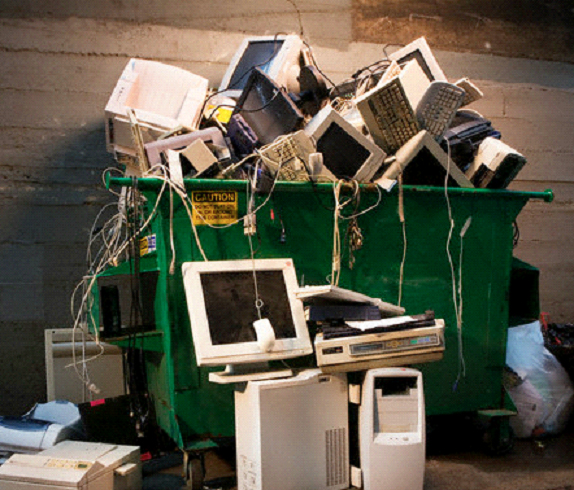
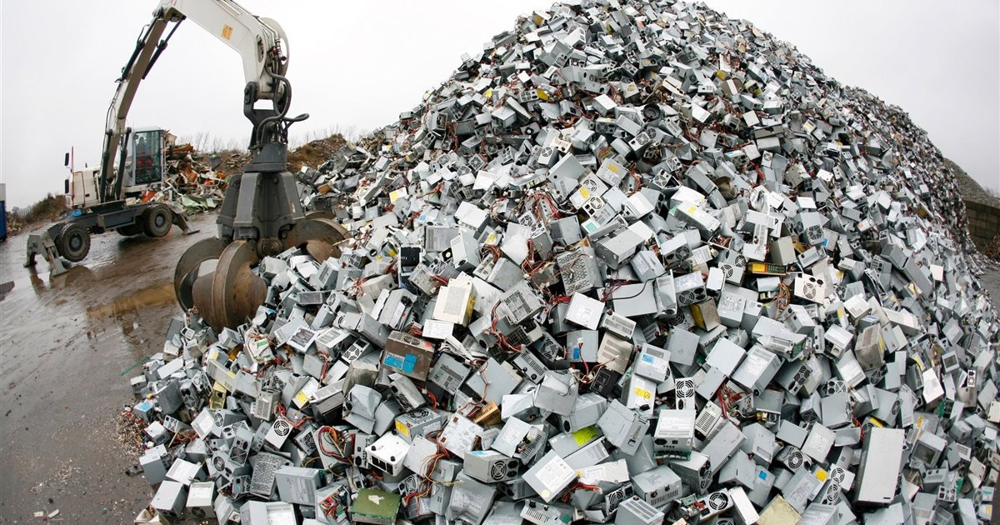
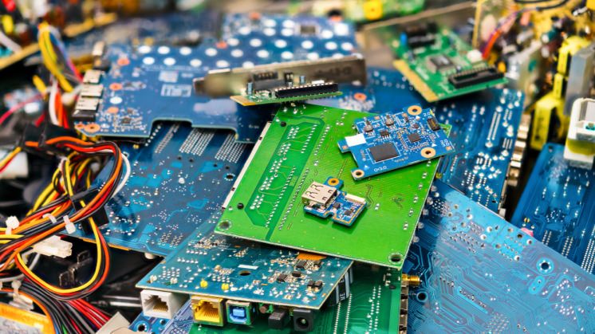
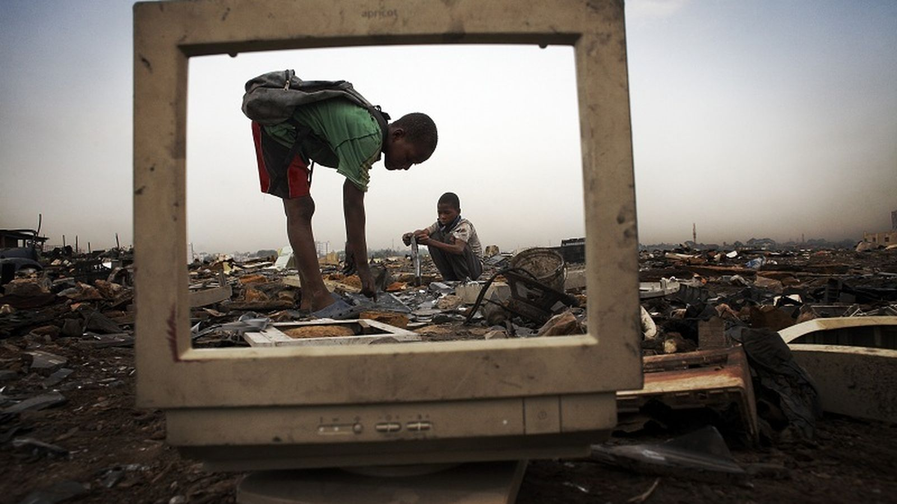
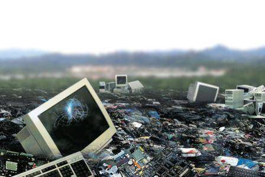

📖 ¿Qué es la contaminación informática?
Es el conjunto de efectos negativos que la industria tecnológica produce en el planeta. Comienza en las minas donde se extraen minerales necesarios para fabricar dispositivos electrónicos y termina en vertederos donde se liberan sustancias químicas peligrosas.
La contaminación informática incluye el consumo excesivo de recursos naturales, la generación de residuos electrónicos y el alto gasto energético de centros de datos, fábricas y redes de comunicación.
Aunque muchas veces no la vemos directamente, su impacto ambiental es muy grande y afecta al aire, al agua y al suelo.
1. El problema de la producción masiva

Vivimos en una cultura de actualización constante. Cada año aparecen nuevos teléfonos, ordenadores y dispositivos que sustituyen a los anteriores aunque todavía funcionen.
La estrategia de vender productos que duran poco o que se vuelven rápidamente obsoletos obliga a los consumidores a comprar nuevos dispositivos con frecuencia.
Esto provoca un aumento en la fabricación de componentes electrónicos, lo que implica más extracción de minerales, mayor consumo de energía y más contaminación durante el proceso industrial.
2. Tipos de daños al medio ambiente

🗑️ Basura Electrónica (E-Waste)
Cuando un dispositivo se rompe o deja de usarse, se convierte en un residuo electrónico. Muchos de estos residuos terminan en vertederos o son enviados a países en desarrollo donde se desmontan sin medidas de seguridad adecuadas.
- Plomo y Cadmio: Dañan el sistema nervioso.
- Mercurio: Puede contaminar ríos y afectar a la fauna.
- Químicos en plásticos: Tardan siglos en degradarse.
⚡ Consumo Energético "Invisible"
Incluso si tu móvil está apagado, tus datos siguen almacenados en servidores y centros de datos repartidos por todo el mundo.
Estos centros de datos funcionan las 24 horas del día y necesitan enormes cantidades de electricidad.
3. Impacto de la Inteligencia Artificial y el Minado

Las nuevas tecnologías como la inteligencia artificial o el minado de criptomonedas requieren una gran capacidad de cálculo, lo que implica un consumo energético muy elevado.
- Entrenamiento de modelos: Puede emitir grandes cantidades de carbono.
- Minería de datos: Requiere miles de tarjetas gráficas.
- Centros de datos: Necesitan sistemas de refrigeración constantes.
4. El Ciclo de Vida del Producto

Todo dispositivo electrónico pasa por diferentes fases desde su creación hasta su eliminación.
Primero se extraen minerales como Litio, Cobalto o Coltán, esenciales para fabricar baterías y componentes electrónicos.
Después se fabrican, se distribuyen a nivel mundial y finalmente llegan a los consumidores.
5. Datos curiosos

- Fabricar un microchip requiere grandes cantidades de energía.
- Internet consume aproximadamente tanta electricidad como algunos países.
- Un teléfono móvil contiene más de 40 minerales diferentes.
- Muchos dispositivos electrónicos podrían reciclarse o reutilizarse.